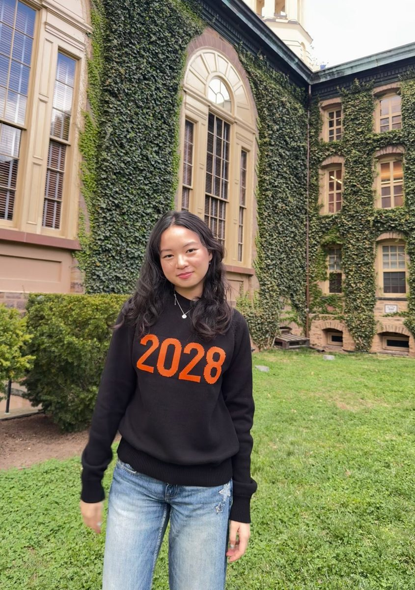
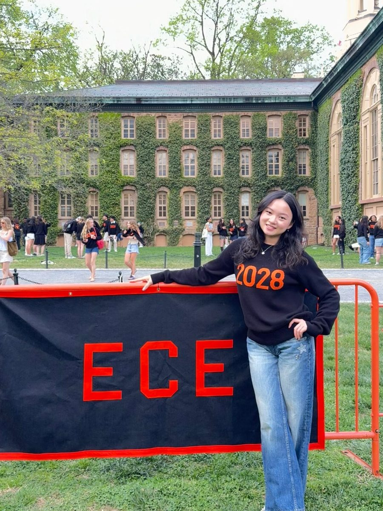
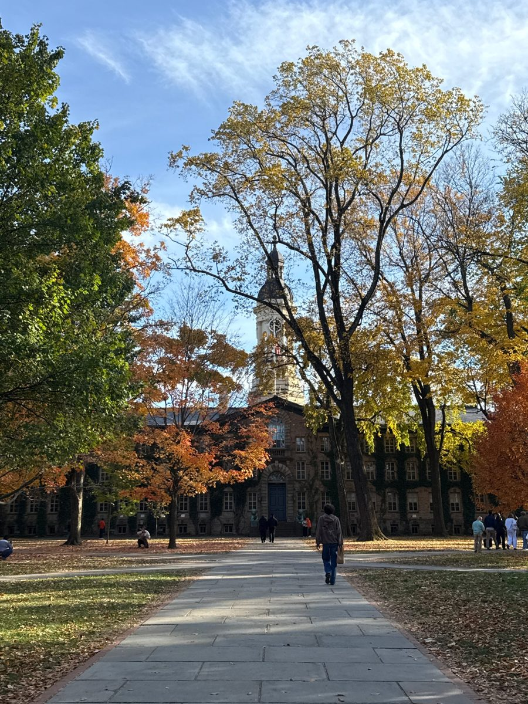
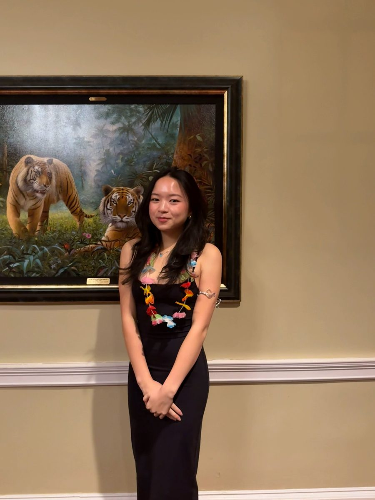
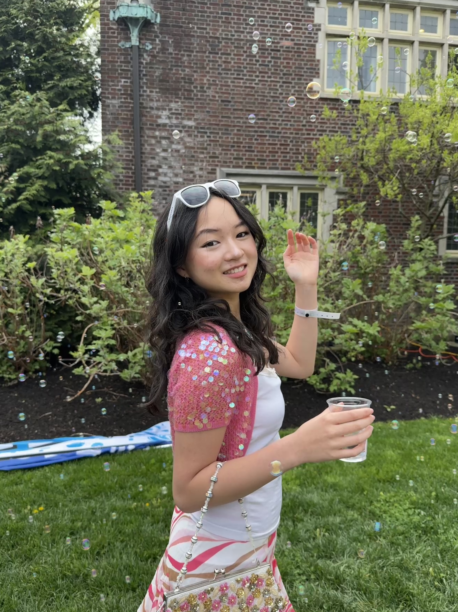

z z z
Projects
z z z
Experience
z z z
About Me
About Me
Hi, I'm Bonnie!
Welcome to my personal website!
I'm an undergraduate student at Princeton University majoring in Electrical and Computer Engineering. I like to build and code in my free time, play video games, and take care of my many aquariums.





Projects
Experience